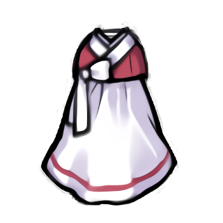
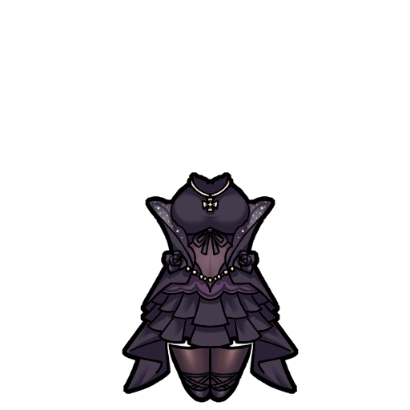
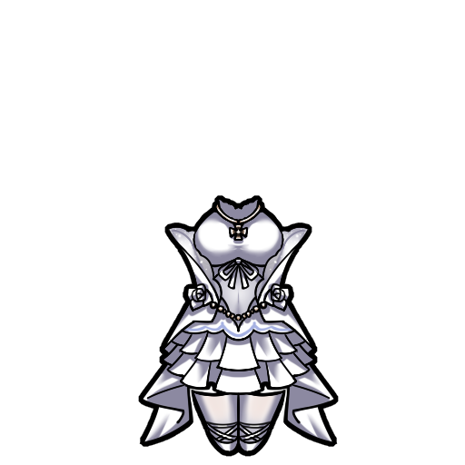
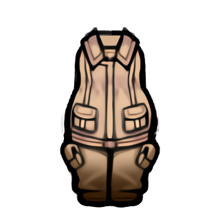

魅狐传统连衣裙Kurin_OnSkin_Traditional_Simple_Dress

Kurin/Apparel/OnSkin/Traditional_Simple_Dress/Texture
—
纯白色的裙子和粉红色的衬衫是令人印象深刻的魅狐服装。
本片：魅狐传统连衣 魅狐黑色婚纱 魅狐白色婚纱 魅狐工作连衣
Kurin_OnSkin_Traditional_Simple_Dress
Kurin/Apparel/OnSkin/Traditional_Simple_Dress/Texture
—
纯白色的裙子和粉红色的衬衫是令人印象深刻的魅狐服装。
Kurin_OnSkin_Wedding_Dress_Black
Kurin/Apparel/OnSkin/Wedding_Dress_Black/Wedding_Dress_Black
—
作为人类伴侣而诞生的魅狐天生渴求着爱与温暖，几乎每个魅狐女孩小时候都曾望着橱窗里的婚纱出神，然而爱情的泡影在死亡面前遥不可及，所以一定要珍惜身前的人。
Kurin_OnSkin_Wedding_Dress_White
Kurin/Apparel/OnSkin/Wedding_Dress_White/Wedding_Dress_White
—
作为人类伴侣而诞生的魅狐天生渴求着爱与温暖，几乎每个魅狐女孩小时候都曾望着橱窗里的婚纱出神，而穿上这身衣服也被认为是共和国时代魅狐们的毕生梦想之一。
Kurin_OnSkin_Work_Jumpsuit
Kurin/Apparel/OnSkin/Work_Jumpsuit/Texture
—
它是在赤狐军械库工作的技术人员的制服。不仅有用于存放各种工具和零件的便捷口袋，整件工作服采用耐油污、耐火花的材料制成，非常适合工程作业。